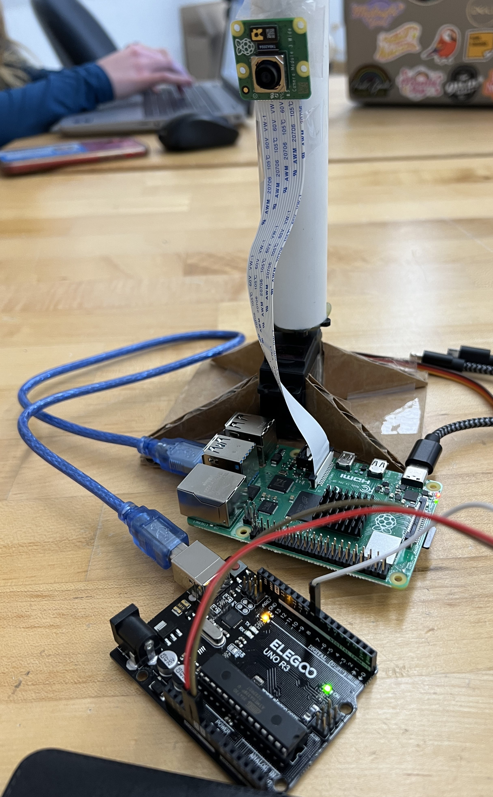

Software

Electrical connections between the Arduino, Raspberry Pi, Picamera, and Servo

improve perfoamnces
The goal for this sprint was to finish fabrication of the tripod as well as integrating everything. The tripod was finished, software was refined to have faster response time and less delay, and electrical began experimenting with the new driving RC motor.
made tripod idk
improve perfoamnces
Our main goal this sprint was to get started on one of our stretch goals: making the RC motor drive the tripod. Through a lot of debugging, we figured out the calibration sequence for the motor to get it started (shown in detail in the video). In this sprint, we simply tested the motor's max speeds to see how much speed might suit our project the best.